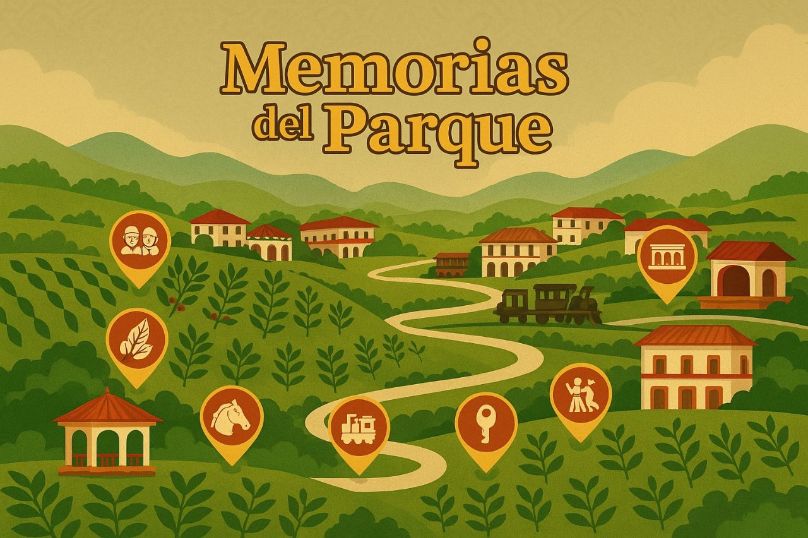
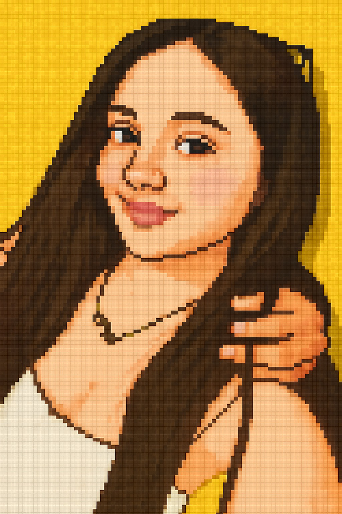
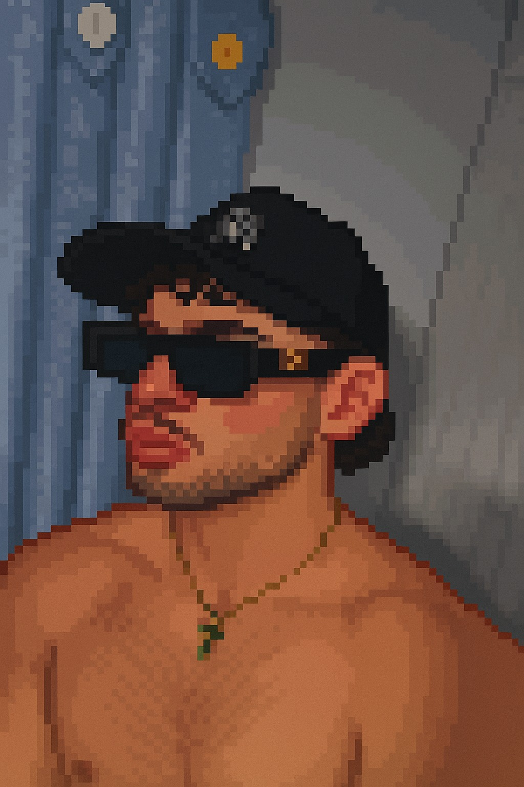
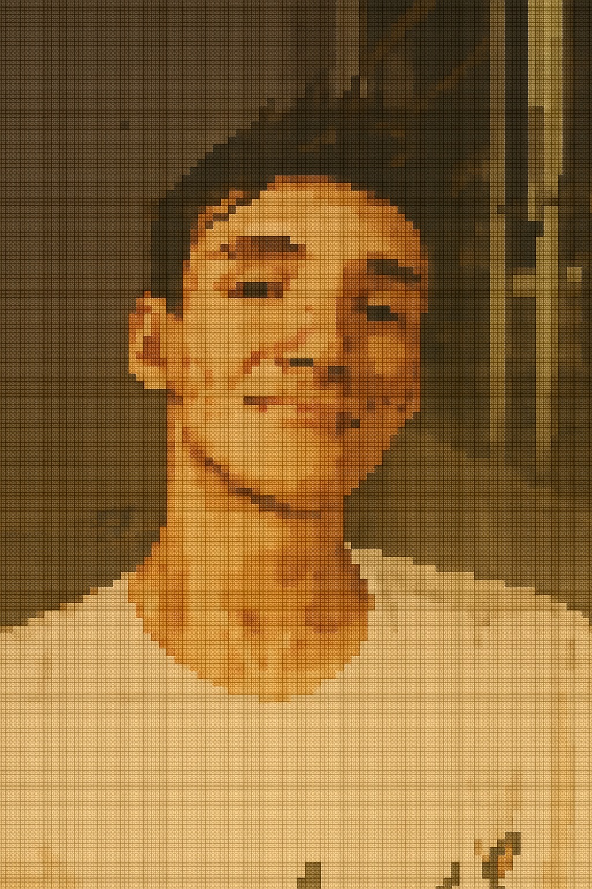

Bienvenido a Memorias del Parque
Un viaje cultural inspirado en el Parque del Café, donde recuperarás recuerdos perdidos mientras descubres nuestras raíces.

¿Quiénes somos?

Mariana Gonzalez
Ingeniería de Software

Esteban Bonilla
Ingeniería de Software
Valentina Ruiz
Ingeniería de Software

Santiago Leyton
Ingeniería de Software
Yesika Arias
Ingeniería Industrial
Sofia Espinosa
Ingeniería Industrial
“Memorias del Parque” es más que un videojuego: es un recorrido por nuestras raíces, nuestras historias y lo que nos hace únicos como colombianos.
Información del videojuego
Memorias del Parque es un videojuego educativo y cultural que lleva al jugador a través de diferentes zonas del Parque del Café. La misión: ayudar a una pareja de abuelos a recuperar sus recuerdos perdidos reviviendo tradiciones, historias y lugares emblemáticos del parque.
Niveles del Juego
Tabla de Clasificaciones
| Posición | Nombre | Tiempo (minutos) |
|---|